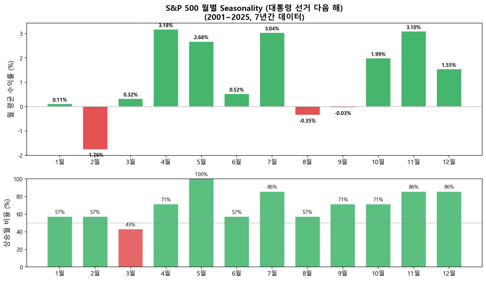
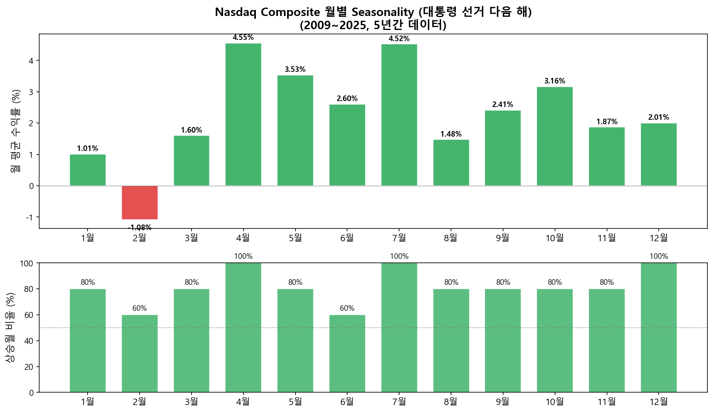
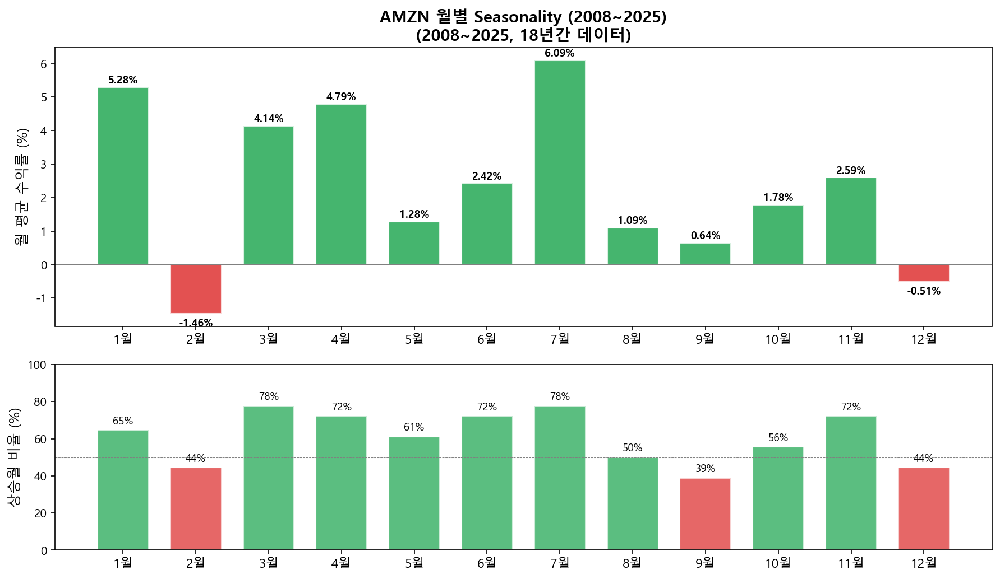
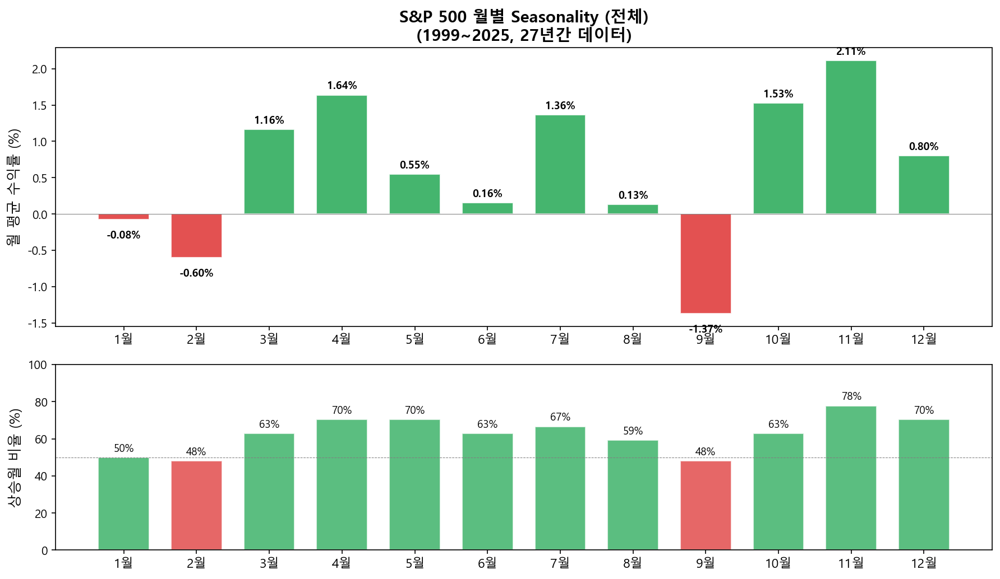

Almanac Trader — Seasonality 분석 도구¶
Seasonality란¶
Seasonality(계절성)란 주가가 특정 날짜나 월에 역사적으로 오르거나 내리는 경향을 말합니다. 예를 들어 "1월에는 소형주가 상승하는 경향이 있다(January Effect)" 같은 것이 대표적입니다.
단기 투자자에게 필수 서적이라고 불리는 Stock Trader's Almanac 2021에는 이런 seasonality 데이터가 상세하게 정리되어 있습니다.
과거 1999년부터 2020년까지 Nasdaq Composite 지수의 2월 1일의 수익은 어땠을까요?
위 질문의 답: 2월 1일에는 76.2% 즉 10번 중 7.62번의 확률로 상승장이었습니다.
이런 seasonality 데이터는 과거 주가 데이터만 있으면 직접 만들 수 있습니다.
구글 시트 버전¶
Almanac Trader 구글 시트 복사하기: Google Sheets 링크
시트에서 세 가지 조건을 변경하여 원하는 분석을 생성할 수 있습니다:

| 조건 | 설명 | 예시 |
|---|---|---|
| Market Index | 분석할 지수/종목 | S&P 500, Nasdaq, AMZN 등 |
| Period Start | 데이터 시작 연도 | 1999, 2008 등 |
| Presidential Cycle | 대통령 선거 주기 필터 | All, Election Year+1 등 |
대통령 선거 주기 (Presidential Cycle)¶
미국 시장에서는 4년 주기의 대통령 선거가 시장에 영향을 미친다고 알려져 있습니다. 새 정부의 정책 변화, 재정 지출 조정 등이 시장에 영향을 미치기 때문입니다. 역사적으로 선거 다음 해(Election Year + 1)가 가장 약한 해로 기록되어 왔습니다. 이 필터를 적용하면 해당 주기에 해당하는 연도만 추출하여 seasonality를 계산합니다.
Seasonality 차트 읽는 법¶
차트는 두 부분으로 구성됩니다:
| 영역 | 의미 |
|---|---|
| 상단 (누적 로그 수익률 — 수익률을 누적해서 더할 수 있는 형태로 변환한 것) | 1년간의 수익 추세. 우상향이면 해당 구간에서 역사적으로 상승 경향 |
| 하단 (상승일 비율) | 각 날짜에 상승장이었던 확률. 50% 이상(초록)이면 상승 우세, 미만(빨강)이면 하락 우세 |
이 데이터는 절대적인 수치보다는 해당일의 추세 방향을 참조하는 용도로 사용하는 것이 적절합니다.
파이썬 버전¶
구글 시트의 제약 없이 파이썬으로 동일한 분석을 실행할 수 있습니다. yfinance로 데이터를 받아 seasonality를 계산합니다.
S&P 500 — 대통령 선거 다음 해 (2001~2025)¶

Nasdaq Composite — 대통령 선거 다음 해 (2009~2025)¶

AMZN (2008~2025)¶

S&P 500 — 전체 연도 (1999~2025)¶

파이썬 핵심 코드
import numpy as np
import pandas as pd
import yfinance as yf
# 데이터 다운로드
data = yf.download("^GSPC", start="1999-01-01", end="2025-12-31")
data['log_return'] = np.log(data['Close'] / data['Close'].shift(1))
# 대통령 선거 다음 해 필터
election_years = set(range(2000, 2025, 4))
valid_years = {y + 1 for y in election_years}
data = data[data.index.year.isin(valid_years)]
# 월/일별 seasonality 계산
data['month'] = data.index.month
data['day'] = data.index.day
seasonality = data.groupby(['month', 'day']).agg(
win_rate=('log_return', lambda x: (x > 0).mean() * 100),
log_return_sum=('log_return', 'sum')
)
Seasonality의 불편한 진실¶
대부분의 "패턴"은 새로운 데이터(아웃오브샘플, out-of-sample)에서 작동하지 않는다¶
Seasonality 데이터를 처음 보면 "이걸로 돈을 벌 수 있겠다!"는 생각이 듭니다. 하지만 정직하게 말하면:
- 과거 데이터에서 발견한 패턴 대부분은 우연의 산물입니다. 동전을 1,000번 던지면 '연속 7번 앞면'이 나오는 구간이 반드시 있습니다 — 그걸 보고 '이 동전은 7번째마다 앞면이 나온다'고 결론 내리는 것과 같습니다. 252 거래일 x 26년 = 6,552개 데이터 포인트에서 "상승 확률 76%인 날"을 찾는 것은 어렵지 않습니다. 하지만 그 패턴이 다음 해에도 반복될 확률은 동전 던지기와 크게 다르지 않습니다.
- Sell in May: 11~4월이 5~10월보다 수익률이 높은 것은 사실이지만, 이 "전략"으로 매매하면 거래 비용과 타이밍 실패로 단순 보유보다 못한 결과가 나올 수 있습니다.
- 2020년 3월: "안전한 기간"인 1~4월에 코로나 폭락(-34%)이 발생했습니다.
그래도 Seasonality가 유용한 이유¶
패턴이 깨지는데 왜 보는가? 맥락(context)을 제공하기 때문입니다.
| 상황 | Seasonality의 역할 |
|---|---|
| 다른 신호(VIX(변동성 지수), 기술적 분석)와 방향이 같을 때 | 확신을 높여주는 보조 근거 |
| 역사적으로 약한 달(9월)에 추가 하락 신호가 나올 때 | "지금 방어적으로 가는 게 맞다"는 판단 보강 |
| 강한 달(11~1월)에 진입할 때 | 타이밍에 대한 심리적 부담 경감 |
학습 데이터 vs 검증 데이터 (In-Sample vs Out-of-Sample): 실제로 확인해보면?¶
S&P 500 월별 평균 수익률을 1999~2015년(in-sample)과 2016~2025년(out-of-sample)로 나눠 비교합니다:
| 월 | In-Sample (99-15) | Out-of-Sample (16-25) | 방향 일치 |
|---|---|---|---|
| 1월 | -1.01% | +1.41% | X |
| 2월 | -0.63% | -0.54% | O |
| 3월 | +1.74% | +0.18% | O |
| 4월 | +1.95% | +1.11% | O |
| 5월 | +0.01% | +1.46% | O |
| 6월 | -0.84% | +1.85% | X |
| 7월 | +0.18% | +3.37% | O |
| 8월 | -0.33% | +0.92% | X |
| 9월 | -1.39% | -1.34% | O |
| 10월 | +2.04% | +0.66% | O |
| 11월 | +0.92% | +4.15% | O |
| 12월 | +1.20% | +0.13% | O |
방향 일치: 9/12 (75%) — 동전 던지기(50%)보다는 낫지만, 1월·6월·8월은 완전히 뒤집혔습니다. 특히 "1월 효과(January Effect)"가 OOS에서 부호가 반전된 것이 주목할 만합니다.
Seasonality는 단독으로 사용하면 동전 던지기보다 약간 나은 수준이고, 다른 도구와 조합하면 유용한 맥락입니다.
대통령 선거 주기별 특성¶
| 주기 | 특성 | 역사적 평균 |
|---|---|---|
| 선거 해 (Year 0) | 현직 유리한 정책, 시장 우호적 | 상승 경향 |
| 선거 다음 해 (Year +1) | 가장 약한 해, 새 정부 조정기 | 약세 |
| 중간선거 해 (Year +2) | 정치적 불확실성 정점 | 하반기 반등 경향 |
| 선거 전 해 (Year +3) | 선거 대비 부양책, 가장 강한 해 | 강세 |
마무리¶
Seasonality는 과거 데이터의 경향이지 미래를 보장하지 않습니다. 하지만 수십 년간의 데이터에서 반복적으로 나타나는 패턴은 참고할 가치가 있습니다:
- 절대 매매 신호가 아닌 참조 도구: 다른 분석(VIX, 기술적 분석 등)과 함께 사용
- 종목별 추세 고려 필수: AMZN 같은 장기 상승 종목과 XOM 같은 하락 종목은 seasonality 패턴이 정반대
- 패턴은 깨질 수 있다: 2020 코로나, 2008 금융위기처럼 "안전한 기간"에도 폭락은 발생
- 가장 큰 가치: 특정 날짜/월에 "역사적으로 이런 경향이 있었다"는 맥락을 제공
참고¶
이전 글: 몬테카를로(Monte Carlo) 시뮬레이션 백테스팅 | 다음 글: GEX 직접 계산하기 — Google Sheets + Python